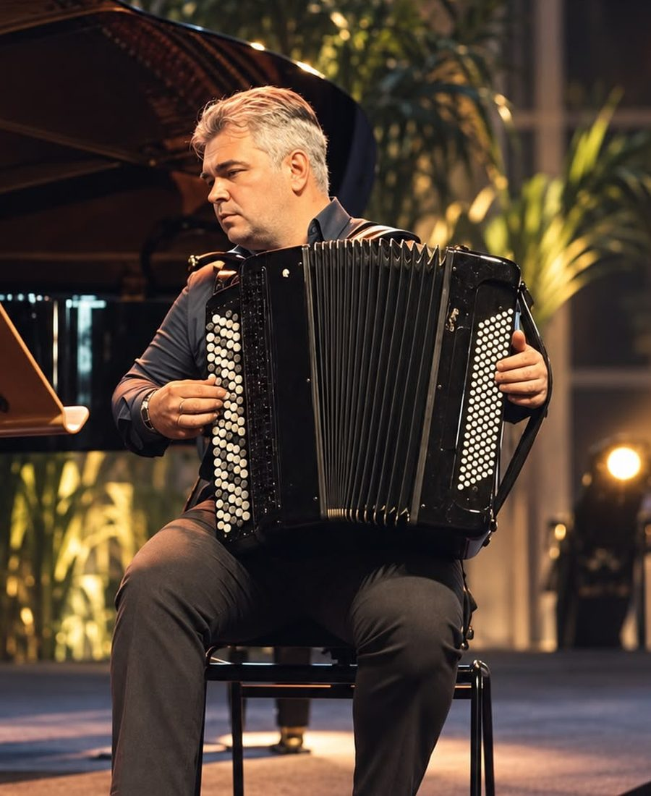
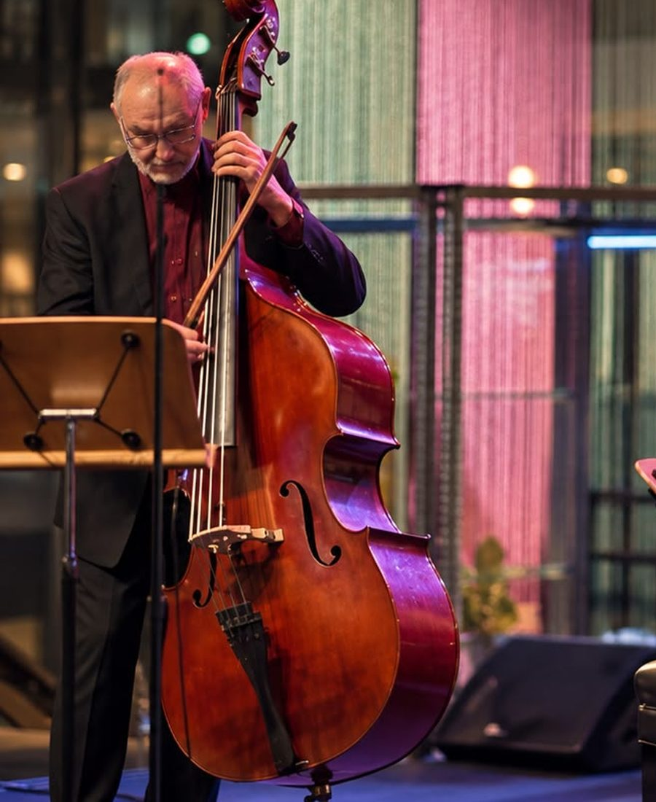

A&G Academy
一台手风琴，一把低音提琴，和它们之间那二十米的舞台。
A&G Academy 长在新加坡原本就有的两样东西上：Accordion Singapore 这个圈子，和新加坡交响乐团。亚历山大带来手风琴里的民间记忆；根纳季带来一条你能从地板上感觉到的低音线。他们一起演出，也一起教。

A 是他
亚历山大·法尔谢耶夫（Aleksandr Farseev）
手风琴 & 巴扬
亚历山大在俄罗斯出生、受训，创办了 Accordion Singapore 这个圈子，多年来一直在争一件事——主要是跟乐器争，偶尔跟观众争：手风琴不是拿来逗乐的新鲜玩意。他的演奏在古典、俄罗斯民间音乐、探戈和爵士之间来回，哪一样都不是穿来玩玩的戏服。
他在欧洲和亚洲多地演出，多次在国际比赛中获奖，在新加坡教过一百多名学生，其中好几位如今自己也拿了国际奖项。免费的 Accordion Score Library 也是他一手建起来并维护至今的。
在 YouTube 上看
G 是他
根纳季·穆济卡（Guennadi Mouzyka）
低音提琴
根纳季生于弗拉季高加索，在莫斯科受训，以优异成绩毕业于莫斯科柴可夫斯基音乐学院。他曾在罗日杰斯特文斯基执棒的苏联文化部国家交响乐团演奏，后任莫斯科爱乐乐团低音提琴副首席，1992 年加入新加坡交响乐团，如今是乐团的低音提琴首席。
作为独奏家，他的曲目从巴洛克一直到当代。他在新加坡首演了 Anne LeBaron 的 Inner Voice 和为他而写的 Tan Chan Boon 的 Natural，并代表新加坡参与了 Andres Martin 的 Anna's Promise 全球首演。他与马友友的丝绸之路合奏团、T'ang Quartet 以及柏林爱乐乐团管弦乐学院合作演出，现为杨秀桃音乐学院的驻院教席，并在欧洲、亚洲和美国开设大师班。
跟他学琴